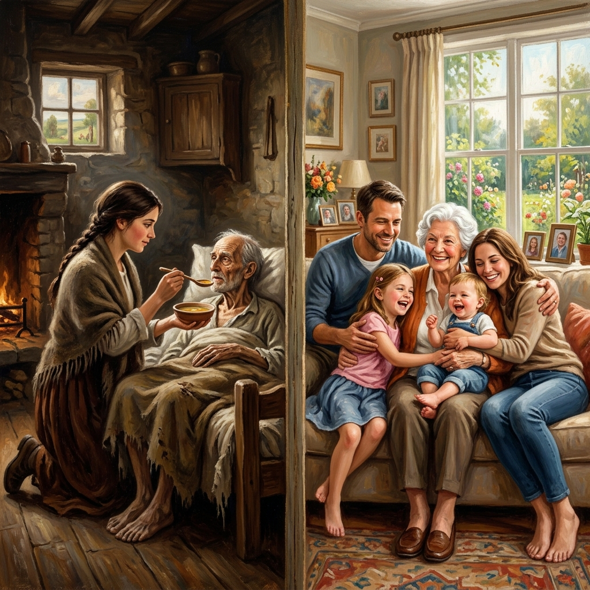
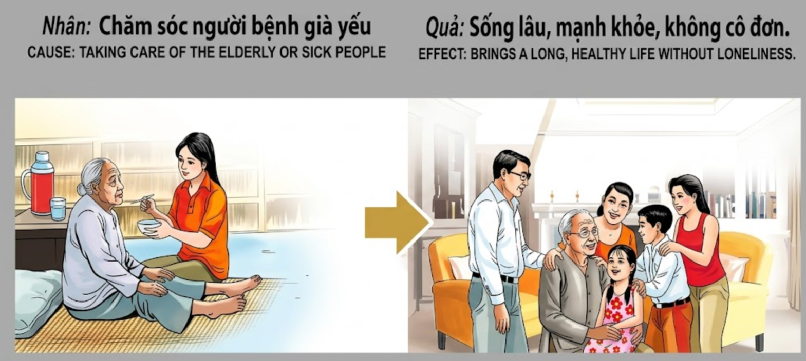

La Cosecha de la CompasiónThe Harvest of CompassionIl Raccolto della Compassione同情心的收获حصاد الرحمةЖатва состраданияDie Ernte des MitgefühlsLa moisson de la compassion慈悲の収穫A Colheita da CompaixãoSự Thu Hoạch Của Lòng Từ Bi
Quien dedica su tiempo y amor a cuidar de los ancianos y enfermos, siembra en su propio destino una vejez saludable, rodeada de afecto y libre de la frialdad de la soledad.He who dedicates his time and love to caring for the elderly and sick, sows in his own destiny a healthy old age, surrounded by affection and free from the coldness of loneliness.Chi dedica il proprio tempo e amore a prendersi cura degli anziani e degli ammalati, semina nel proprio destino una vecchiaia sana, circondata da affetto e libera dalla freddezza della solitudine.奉献时间和爱心照顾老人和病人的人，在自己的命运中种下了健康的晚年，在关爱中度过，远离孤独的寒冷。من يكرس وقته وحبه لرعاية المسنين والمرضى، يزرع في قدره شيخوخة صحية، محاطة بالمودة وخالية من برودة الوحدة.Тот, кто посвящает свое время и любовь заботе о пожилых и больных, сеет в своей судьбе здоровую старость, окруженную привязанностью и свободную от холода одиночества.Wer seine Zeit und Liebe der Pflege von älteren Menschen und Kranken widmet, sät in seinem eigenen Schicksal ein gesundes Alter, umgeben von Zuneigung und frei von der Kälte der Einsamkeit.Celui qui consacre son temps et son amour à soigner les personnes âgées et les malades sème dans son propre destin une vieillesse saine, entourée d'affection et libérée de la froideur de la solitude.高齢者や病人の世話に時間と愛を捧げる者は、自らの運命に、愛情に包まれ、孤独の冷たさから解き放たれた健康な老後をまくことになります。Quem dedica o seu tempo e amor a cuidar dos idosos e enfermos, semeia no seu próprio destino uma velhice saudável, rodeada de afeto e livre da frieza da solidão.Ai dành thời gian và tình yêu để chăm sóc người già và người bệnh, chính là đang gieo vào vận mệnh của mình một tuổi già khỏe mạnh, được bao bọc trong tình thân và không bao giờ phải chịu cái lạnh lẽo của sự cô đơn.
Cuidar de los vulnerables es uno de los actos más nobles de la experiencia humana. Mientras el mundo corre hacia la novedad y la fuerza, aquel que se detiene para sostener la mano de quien ha perdido el vigor, está realizando una ofrenda sagrada ante el altar del karma. La fragilidad de la vejez y el dolor de la enfermedad no son solo pruebas para quien las padece, sino espejos donde se refleja la calidad del alma de los cuidadores.
La ley kármica garantiza que la ternura que hoy entregamos sea la misma que recibiremos cuando las fuerzas nos abandonen. Quien no huye del lecho del enfermo ni ignora la voz cansada del anciano, está construyendo un puente de méritos hacia su propia longevidad. Ningún acto de servicio desinteresado queda sin registro en el cosmos; la paciencia ante la debilidad ajena se transforma, en vidas futuras, en una robusta salud y una mente lúcida en el invierno de la vida.
Al renacer, estas almas disfrutan de los frutos de su antigua piedad. La soledad, ese mal que asola a tantos, no los encuentra. Renacen rodeados de familias amorosas y amigos leales, porque en el pasado comprendieron que nadie debe recorrer los últimos tramos del camino en aislamiento. Su vitalidad persistente es el eco de la vida que ayudaron a sostener, demostrando que la compasión es, en última instancia, la mejor medicina para la propia existencia.
Caring for the vulnerable is one of the noblest acts of the human experience. While the world runs toward novelty and strength, he who stops to hold the hand of one who has lost vigor is making a sacred offering before the altar of karma. The fragility of old age and the pain of illness are not just trials for those who suffer them, but mirrors reflecting the quality of the caregivers' souls.
Karmic law guarantees that the tenderness we give today will be the same we receive when our strength leaves us. He who does not flee from the sickbed nor ignores the tired voice of the elder is building a bridge of merits toward his own longevity. No act of selfless service goes unregistered in the cosmos; patience in the face of another's weakness transforms, in future lives, into robust health and a lucid mind in the winter of life.
Upon rebirth, these souls enjoy the fruits of their ancient piety. Loneliness, that evil which haunts so many, does not find them. They are reborn surrounded by loving families and loyal friends, because in the past they understood that no one should travel the last stretches of the road in isolation. Their persistent vitality is the echo of the life they helped sustain, proving that compassion is, ultimately, the best medicine for one's own existence.
Prendersi cura dei vulnerabili è uno degli atti più nobili dell'esperienza umana. Mentre il mondo corre verso la novità e la forza, chi si ferma a stringere la mano di chi ha perso vigore sta facendo un'offerta sacra davanti all'altare del karma. La fragilità della vecchiaia e il dolore della malattia non sono solo prove per chi le subisce, ma specchi in cui si riflette la qualità dell'anima di chi si prende cura.
La legge karmica garantisce che la tenerezza che diamo oggi sarà la stessa che riceveremo quando le forze ci abbandoneranno. Chi non fugge dal letto del malato né ignora la voce stanca dell'anziano sta costruendo un ponte di meriti verso la propria longevità. Nessun atto di servizio disinteressato rimane senza registrazione nel cosmo; la pazienza di fronte alla debolezza altrui si trasforma, nelle vite future, in una salute robusta e una mente lucida nell'inverno della vita.
Rinascono, e queste anime godono dei frutti della loro antica pietà. La solitudine, quel male che affligge tanti, non li trova. Rinascono circondati da famiglie amorevoli e amici leali, perché in passato hanno capito che nessuno dovrebbe percorrere gli ultimi tratti del cammino in isolamento. La loro persistente vitalità è l'eco della vita che hanno aiutato a sostenere, dimostrando che la compassione è, in definitiva, la migliore medicina per la propria esistenza.
照顾弱势群体是人类经验中最崇高的行为之一。当世界奔向新奇与力量时，那些停下来握住失去活力者双手的人，正在因果祭坛前进行神圣的奉献。老年的脆弱和疾病的痛苦不仅是对受难者的考验，也是反映照料者灵魂品质的镜子。
因果法则保证，我们今天给予的温柔，将在我们力量离去时同样回报。那些不逃离病榻、不忽视老人疲惫声音的人，正在通往自己长寿的道路上架起功德之桥。没有任何无私服务的行为在宇宙中是不被记录的；面对他人虚弱时的耐心，在未来的生命中会转化为生命晚期的强健体魄和清醒头脑。
重生后，这些灵魂享受着他们远古虔诚的果实。孤独这个困扰许多人的邪恶，不会找到他们。他们重生在充满爱的家庭和忠实的朋友中间，因为在过去他们明白，没有人应该孤立地走完最后一段路。他们持久的生命力是他们曾帮助维持的生命的响，证明了同情心归根结底是自身存在的良药。
إن رعاية المستضعفين هو أحد أسمى الأفعال في التجربة الإنسانية. وبينما يسعى العالم نحو التجدد والقوة، فإن من يتوقف ليمسك بيد من فقد حيويته يقدم قرباناً مقدساً أمام محراب الكارما. إن هشاشة الشيخوخة وألم المرض ليسا مجرد ابتلائات لمن يعانون منها، بل هما مرآتان تعكسان جودة أرواح من يقدمون الرعاية.
يضمن قانون الكارما أن الحنان الذي نقدمه اليوم سيكون هو نفسه الذي سنتلقاه عندما تتركنا قوتنا. من لا يهرب من سرير المريض ولا يتجاهل صوت المسن المتعب يبني جسراً من الاستحقاقات نحو طول عمره. لا يوجد فعل خدمة إيثاري يمر دون تسجيل في الكون؛ فالصبر في مواجهة ضعف الآخرين يتحول، في الحيوات المستقبلية، إلى صحة قوية وعقل منير في شتاء العمر.
عند الولادة من جديد، تتمتع هذه الأرواح بثمار تقواها القديمة. فالوحدة، ذلك الشر الذي يطارد الكثيرين، لا يجد لهم طريقاً. يولدون من جديد محاطين بعائلات محبة وأصدقاء مخلصين، لأنهم أدركوا في الماضي أنه لا ينبغي لأحد أن يسلك المراحل الأخيرة من الطريق في عزلة. حيويتهم المستمرة هي صدى للحياة التي ساعدوا في دعمها، مما يثبت أن الرحمة هي، في نهاية المطاف، أفضل دواء لوجود المرء نفسه.
Забота о беззащитных — один из самых благородных поступков в человеческом опыте. Пока мир стремится к новизне и силе, тот, кто останавливается, чтобы пожать руку потерявшему бодрость, совершает священное подношение на алтарь кармы. Хрупкость старости и боль болезни — это не только испытания для тех, кто их переносит, но и зеркала, отражающие качество души тех, кто заботится.
Кармический закон гарантирует, что нежность, которую мы дарим сегодня, будет той же самой, которую мы получим, когда силы покинут нас. Тот, кто не бежит от постели больного и не игнорирует усталый голос старика, строит мост заслуг к собственному долголетию. Ни один акт бескорыстного служения не остается незарегистрированным в космосе; терпение перед лицом чужой слабости в будущих жизнях превращается в крепкое здоровье и ясный ум на закате дней.
Возрождаясь, эти души наслаждаются плодами своего былого милосердия. Одиночество, это зло, одолевающее столь многих, не находит их. Они возрождаются в окружении любящих семей и верных друзей, потому что в прошлом они понимали, что никто не должен проходить последние мили пути в изоляции. Их неиссякаемая жизненная энергия — это эхо жизни, которую они помогали поддерживать, доказывая, что сострадание, в конечном счете, — лучшее лекарство для собственного существования.
Die Sorge um die Schutzbedürftigen ist eine der edelsten Taten der menschlichen Erfahrung. Während die Welt nach Neuheit und Stärke strebt, bringt derjenige, der innehält, um die Hand eines Menschen zu halten, der seine Kraft verloren hat, ein heiliges Opfer vor dem Altar des Karmas dar. Die Zerbrechlichkeit des Alters und der Schmerz der Krankheit sind nicht nur Prüfungen für diejenigen, die unter ihnen leiden, sondern Spiegel, in denen sich die Qualität der Seele der Pflegenden widerspiegelt.
Das karmische Gesetz garantiert, dass die Zärtlichkeit, die wir heute geben, dieselbe sein wird, die wir erhalten, wenn uns unsere Kräfte verlassen. Wer nicht vom Krankenbett flieht und die müde Stimme des Älteren nicht ignoriert, baut eine Brücke des Verdienstes für seine eigene Langlebigkeit. Kein Akt uneigennützigen Dienstes bleibt im Kosmos unregistriert; Geduld angesichts der Schwäche anderer verwandelt sich in zukünftigen Leben in robuste Gesundheit und einen klaren Geist im Winter des Lebens.
Bei der Wiedergeburt genießen diese Seelen die Früchte ihrer einstigen Frömmigkeit. Die Einsamkeit, jenes Übel, das so viele heimsucht, findet sie nicht. Sie werden umgeben von liebevollen Familien und treuen Freunden wiedergeboren, weil sie in der Vergangenheit verstanden haben, dass niemand die letzten Etappen des Weges isoliert zurücklegen sollte. Ihre anhaltende Vitalität ist das Echo des Lebens, das sie zu erhalten halfen, und beweist, dass Mitgefühl letztendlich die beste Medizin für die eigene Existenz ist.
Prendre soin des vulnérables est l'un des actes les plus nobles de l'expérience humaine. Tandis que le monde court vers la nouveauté et la force, celui qui s'arrête pour tenir la main de celui qui a perdu sa vigueur fait une offrande sacrée devant l'autel du karma. La fragilité de la vieillesse et la douleur de la maladie ne sont pas seulement des épreuves pour ceux qui en souffrent, mais des miroirs où se reflète la qualité de l'âme des soignants.
La loi karmique garantit que la tendresse que nous offrons aujourd'hui sera la même que celle que nous recevrons lorsque nos forces nous abandonneront. Celui qui ne fuit pas le lit du malade et n'ignore pas la voix fatiguée du vieillard construit un pont de mérites vers sa propre longévité. Aucun acte de service désintéressé ne reste sans enregistrement dans le cosmos ; la patience face à la faiblesse d'autrui se transforme, dans les vies futures, en une santé robuste et un esprit lucide dans l'hiver de la vie.
En renaissant, ces âmes profitent des fruits de leur piété ancienne. La solitude, ce mal qui accable tant de gens, ne les trouve pas. Elles renaissent entourées de familles aimantes et d'amis fidèles, car par le passé elles ont compris que personne ne doit parcourir les dernières étapes du chemin dans l'isolement. Leur vitalité persistante est l'écho de la vie qu'elles ont aidé à soutenir, prouvant que la compassion est, en fin de compte, le meilleur remède pour sa propre existence.
弱者を世話することは、人間経験の中で最も崇高な行為の一つです。世界が新しさや強さを求めて走る中、活力を失った人の手を取るために立ち止まる者は、カルマの祭壇の前に神聖な供え物をしているのです。老いの脆弱さや病の痛みは、それに苦しむ人々にとっての試練であるだけでなく、介護者の魂の質を映し出す鏡でもあります。
カルマの法則は、今日私たちが与える優しさが、体力が私たちを離れるときに受け取るものと同じであることを保証します。病床から逃げず、高齢者の疲れた声を無視しない者は、自らの長寿に向けた徳の架け橋を築いています。無私無欲の奉仕の行為は、宇宙に記録されないことはありません。他人の弱さを前にした忍耐は、将来の人生において、人生の晩年における強健な健康と明晰な精神へと変化します。
生まれ変わると、これらの魂はかつての信心の恩恵を享受します。多くの人を苦しめる悪である孤独は、彼らを見つけることはありません。彼らは愛に満ちた家族や忠実な友人に囲まれて生まれ変わります。なぜなら、過去に彼らは、人生の最後の道のりを孤立して進むべきではないことを理解していたからです。彼らの持続的な活力は、彼らが支えるのを助けた命の響きであり、慈悲が究極的には自分自身の存在にとって最良の薬であることを証明しています。
Cuidar dos vulneráveis é um dos atos mais nobres da experiência humana. Enquanto o mundo corre em direção à novidade e à força, aquele que se detém para segurar a mão de quem perdeu o vigor está a realizar uma oferenda sagrada perante o altar do karma. A fragilidade da velhice e a dor da doença não são apenas provações para quem as padece, mas espelhos onde se reflete a qualidade da alma de quem cuida.
A lei cármica garante que a ternura que hoje entregamos será a mesma que receberemos quando as forças nos abandonarem. Quem não foge do leito do enfermo nem ignora a voz cansada do idoso está a construir uma ponte de méritos rumo à sua própria longevidade. Nenhum ato de serviço desinteressado fica sem registo no cosmos; a paciência perante a debilidade alheia transforma-se, em vidas futuras, numa saúde robusta e numa mente lúcida no inverno da vida.
Ao renascer, estas almas desfrutam dos frutos da sua antiga piedade. A solidão, esse mal que assola tantos, não as encontra. Renascem rodeadas de famílias amorosas e amigos leais, porque no passado compreenderam que ninguém deve percorrer os últimos trechos do caminho isolado. A sua vitalidade persistente é o eco da vida que ajudaram a sustentar, demonstrando que a compaixão é, em última análise, a melhor medicina para a própria existência.
Chăm sóc những người yếu thế là một trong những hành động cao quý nhất của con người. Trong khi thế giới mải mê chạy theo sự mới mẻ và sức mạnh, thì những ai dừng lại để nắm lấy đôi bàn tay đã gầy guộc, yếu ớt chính là đang dâng lên một lễ vật thiêng liêng trên bàn thờ nhân quả. Sự mong manh của tuổi già và nỗi đau của bệnh tật không chỉ là thử thách đối với người bệnh, mà còn là tấm gương phản chiếu phẩm chất tâm hồn của những người chăm sóc.
Luật nhân quả bảo đảm rằng lòng trắc ẩn mà chúng ta trao đi hôm nay sẽ chính là sự chăm sóc mà chúng ta nhận được khi sức cùng lực kiệt. Người không rời bỏ giường bệnh, không làm ngơ trước tiếng nói mệt mỏi của người già chính là đang xây dựng chiếc cầu công đức hướng tới sự trường thọ của chính mình. Mọi hành động phụng sự vô tư đều được vũ trụ ghi dấu; lòng kiên nhẫn trước sự yếu đuối của người khác sẽ biến thành sức khỏe dẻo dai và trí tuệ minh mẫn trong những năm tháng xế chiều của các kiếp sau.
Khi tái sinh, những linh hồn này sẽ hưởng thành quả từ lòng hiếu nghĩa xưa kia. Sự cô đơn, nỗi ám ảnh của bao người, sẽ không bao giờ tìm thấy họ. Họ được sinh ra trong sự bao bọc của gia đình yêu thương và những người bạn trung thành, bởi trong quá khứ họ hiểu rằng không một ai nên phải đi những bước cuối của cuộc đời trong cô độc. Sức sống bền bỉ của họ là âm vang của những cuộc đời mà họ đã từng nâng đỡ, minh chứng rằng lòng từ bi chính là phương thuốc tốt nhất cho chính sự tồn tại của con người.
El Cuidador de la Montaña
The Mountain Caretaker
Il Custode della Montagna
山中看护人
حارس الجبل
Горный смотритель
Der Bergherberge
Le gardien de la montagne
山の管理人
O Cuidador da Montanha
Người Chăm Sóc Trên Đỉnh Núi
En una aldea azotada por inviernos crueles, vivía un hombre llamado An. Mientras los jóvenes se marchaban a las grandes ciudades buscando fortuna, An decidió quedarse para cuidar de los ancianos que no podían viajar. Durante décadas, cargó leña, preparó sopas calientes y escuchó las mismas historias cientos de veces, siempre con una sonrisa y una paciencia infinita. Cuando alguien le preguntaba por qué desperdiciaba su juventud, An respondía: 'Solo estoy regando mi propio jardín futuro'.
An murió en la sencillez de su aldea, pero su alma partió cargada de bendiciones silenciosas. Renació en una familia real de un reino legendario. Pero lo que lo distinguía no eran sus riquezas, sino una vitalidad que desafiaba el paso del tiempo. A los ochenta años, An conservaba la elasticidad de un joven y la mente clara de un erudito. Nunca conoció la soledad del mando; sus hijos, nietos y súbditos lo amaban con una devoción que parecía venir de un tiempo antiguo.
Su vida fue larga y libre de enfermedades graves. Se decía que dondequiera que An iba, la salud y la alegría lo seguían. En sus años finales, rodeado de cuatro generaciones de descendientes, recordaba en sueños una pequeña choza y el calor de un fogón donde una vez alimentó a quienes no tenían a nadie más. Comprendió entonces que la fuerza de sus piernas y la calidez de su hogar actual eran los ecos de las mantas que una vez repartió en el frío invierno del pasado.
In a village hit by cruel winters, there lived a man named An. While the youth left for large cities looking for fortune, An decided to stay and care for the elderly who could not travel. For decades, he carried wood, prepared hot soups, and listened to the same stories hundreds of times, always with a smile and infinite patience. When someone asked why he wasted his youth, An replied: 'I am only watering my own future garden'.
An died in the simplicity of his village, but his soul left loaded with silent blessings. He was reborn into a royal family of a legendary kingdom. But what distinguished him was not his wealth, but a vitality that defied the passage of time. At eighty years old, An kept the elasticity of a young person and the clear mind of a scholar. He never knew the loneliness of command; his children, grandchildren, and subjects loved him with a devotion that seemed to come from an ancient time.
His life was long and free of serious illnesses. It was said that wherever An went, health and joy followed him. In his final years, surrounded by four generations of descendants, he remembered in dreams a small hut and the warmth of a hearth where he once fed those who had no one else. He realized then that the strength of his legs and the warmth of his current home were the echoes of the blankets he once distributed in the cold winter of the past.
In un villaggio colpito da inverni crudeli, viveva un uomo di nome An. Mentre i giovani partivano per le grandi città in cerca de fortuna, An decise di restare per prendersi cura degli anziani che non potevano viaggiare. Per decenni trasportò legna, preparò zuppe calde e ascoltò le stesse storie centinaia di volte, sempre con un sorriso e una pazienza infinita. Quando qualcuno gli chiedeva perché sprecasse la sua giovinezza, An rispondeva: 'Sto solo innaffiando il mio giardino futuro'.
An morì nella semplicità del suo villaggio, ma la sua anima partì carica di benedizioni silenziose. Rinacque in una famiglia reale di un regno leggendario. Ma ciò que lo distingueva non erano le ricchezze, ma una vitalità che sfidava il passare del tiempo. A ottant'anni, An conservava l'elasticità di un giovane e la mente chiara di un erudito. Non conobbe mai la solitudine del comando; i suoi figli, nipoti e sudditi lo amavano con una devozione che sembrava provenire da un tempo antico.
La sua vita fu lunga e libera da malattie gravi. Si diceva che ovunque andasse An, la salute e la gioia lo seguissero. Nei suoi anni finali, circondato da quattro generazioni di discendenti, ricordava in sogno una piccola capanna e il calore di un focolare dove un tempo nutriva chi non aveva nessun altro. Capì allora che la forza delle sue gambe e il calore della sua casa attuale erano gli echi delle coperte che un tempo distribuiva nel freddo inverno del passato.
在一个遭受严冬袭击的村庄里，住着一个名叫 An 的男人。当年轻人前往大城市寻找财富时，An 决定留下来照顾那些无法旅行的老人。几十年来，他搬运木材，准备热汤，成百上千次地听着同样的故事，总是带着微笑和无限的耐心。当有人问他为什么浪费青春时，An 回答说：‘我只是在浇灌我未来的花园。’
An 在平淡的村庄里去世，但他的灵魂离开时充满了无声的祝福。他重生在一个传奇王国的皇室家庭。但让他脱颖而出的不是他的财富，而是挑战时间流逝的活力。八十岁时，An 保持着年轻人的弹性和学者的清醒头脑。他从未体验过权力的孤独；他的孩子、孙子和臣民都以一种似乎来自远古时代的虔诚爱戴着他。
他的一生漫长且没有严重的疾病。据说无论 An 走到哪里，健康和快乐都伴随着他。在最后的岁月里，在四代子孙的环绕下，他在梦中想起了一间小屋和曾经喂养那些无依无靠者时的炉火温暖。他在那时意识到，他双腿的力量和他现在家庭的温暖，正是他在过去寒冷的冬天里曾经分发的毯子的回响。
في قرية ضربتها فصول شتاء قاسية، كان يعيش رجل يدعى آن. وبينما كان الشباب يغادرون إلى المدن الكبرى طلباً للثروة، قرر آن البقاء لرعاية المسنين الذين لم يتمكنوا من السفر. على مدار عقود، كان يحمل الحطب، ويجهز الحساء الساخن ويستمع إلى القصص نفسها مئات المرات، دائماً بابتسامة وصبر لا ينتهي. عندما كان يسأله أحدهم لماذا يضيع شبابه، كان آن يجيب: 'أنا فقط أسقي حديقة مستقبلي'.
مات آن في بساطة قريته، لكن روحه غادرت وهي محملة ببركات صامتة. وُلد من جديد في عائلة ملكية لمملكة أسطورية. لكن ما ميزه لم يكن ثروته، بل حيوية تتحدى مرور الزمن. في سن الثمانين، حافظ آن على مرونة الشباب وعقل العالم المستنير. لم يعرف أبداً وحدة القيادة؛ فقد أحبه أطفاله وأحفاده ورعاياه بتفانٍ يبدو وكأنه آتٍ من زمن قديم.
كانت حياته طويلة وخالية من الأمراض الخطيرة. كان يقال إنه أينما ذهب آن، تتبعه الصحة والبهجة. في سنواته الأخيرة، محاطاً بأربعة أجيال من أحفاده، كان يتذكر في أحلامه كوخاً صغيراً ودفء موقد حيث أطعم ذات مرة أولئك الذين لم يكن لديهم أحد غيره. أدرك حينها أن قوة ساقيه ودفء منزله الحالي كانا صدى للبطانيات التي وزعها ذات مرة في شتاء الماضي البارد.
В деревне, охваченной суровыми зимами, жил человек по имени Ан. Пока молодежь уезжала в большие города в поисках удачи, Ан решил остаться, чтобы заботиться о стариках, которые не могли путешествовать. Десятилетиями он носил дрова, готовил горячие супы и сотни раз выслушивал одни и те же истории, всегда с улыбкой и безграничным терпением. Когда кто-то спрашивал его, почему он тратит свою молодость, Ан отвечал: «Я всего лишь поливаю мой собственный сад будущего».
Ан умер в простоте своей деревни, но его душа ушла, полная безмолвных благословений. Он возродился в королевской семье легендарного царства. Но отличало его не богатство, а жизненная энергия, бросавшая вызов времени. В восемьдесят лет Ан сохранял гибкость юноши и ясный ум ученого. Он никогда не знал одиночества власти: дети, внуки и подданные любили его с преданностью, которая, казалось, пришла из древних времен.
Его жизнь была долгой и свободной от серьезных болезней. Говорили, что куда бы ни шел Ан, за ним следовали здоровье и радость. В свои последние годы, окруженный четырьмя поколениями потомков, он видел во сне маленькую хижину и тепло очага, где когда-то кормил тех, у кого никого больше не было. Тогда он понял, что сила его ног и тепло нынешнего дома — это эхо тех одеял, которые он когда-то раздавал в холодную зиму прошлого.
In einem Dorf, das von grausamen Wintern heimgesucht wurde, lebte ein Mann namens An. Während die Jugendlichen in die großen Städte zogen, um ihr Glück zu suchen, entschied sich An zu bleiben und sich um die Alten zu kümmern, die nicht reisen konnten. Jahrzehntelang schleppte er Brennholz, kochte heiße Suppen und hörte dieselben Geschichten hunderte Male an, immer mit einem Lächeln und unendlicher Geduld. Wenn ihn jemand fragte, warum er seine Jugend verschwendete, antwortete An: 'Ich bewässere nur meinen eigenen Garten der Zukunft'.
An starb in der Einfachheit seines Dorfes, aber seine Seele ging beladen mit stillem Segen. Er wurde in eine königliche Familie eines legendären Reiches wiedergeboren. Aber was ihn auszeichnete, war nicht sein Reichtum, sondern eine Vitalität, die dem Lauf der Zeit trotzte. Mit achtzig Jahren behielt An die Beweglichkeit eines jungen Mannes und den klaren Verstand eines Gelehrten. Er kannte nie die Einsamkeit des Befehls; seine Kinder, Enkel und Untertanen liebten ihn mit einer Hingabe, die aus einer alten Zeit zu kommen schien.
Sein Leben war lang und frei von schweren Krankheiten. Man sagte, dass überall, wo An hinging, Gesundheit und Freude ihm folgten. In seinen letzten Jahren, umgeben von vier Generationen von Nachkommen, erinnerte er sich in Träumen an eine kleine Hütte und die Wärme eines Herdfeuers, wo er einst diejenigen speiste, die niemanden sonst hatten. Er verstand damals, dass die Kraft seiner Beine und die Wärme seines heutigen Zuhauses die Echos der Decken waren, die er einst im kalten Winter der Vergangenheit verteilt hatte.
Dans un village frappé par des hivers cruels, vivait un homme nommé An. Alors que les jeunes partaient vers les grandes villes chercher fortune, An décida de rester pour s'occuper des vieillards qui ne pouvaient pas voyager. Pendant des décennies, il porta du bois, prépara des soupes chaudes et écouta les mêmes histoires des centaines de fois, toujours avec un sourire et une patience infinie. Quand quelqu'un lui demandait pourquoi il gaspillait sa jeunesse, An répondait : 'Je ne fais qu'arroser mon propre jardin futur'.
An mourut dans la simplicité de son village, mais son âme partit chargée de bénédictions silencieuses. Il renaquit dans une famille royale d'un royaume légendaire. Mais ce qui le distinguait n'était pas ses richesses, mais une vitalité qui défiait le passage du temps. À quatre-vingts ans, An conservait la souplesse d'un jeune homme et l'esprit clair d'un érudit. Il ne connut jamais la solitude du commandement ; ses enfants, petits-enfants et sujets l'aimaient avec un dévouement qui semblait venir d'un temps ancien.
Sa vie fut longue et exempte de maladies graves. On disait que partout où An allait, la santé et la joie le suivaient. Dans ses dernières années, entouré de quatre générations de descendants, il se souvenait en rêve d'une petite cabane et de la chaleur d'un foyer où il avait autrefois nourri ceux qui n'avaient personne d'autre. Il comprit alors que la force de ses jambes et la chaleur de son foyer actuel étaient les échos des couvertures qu'il avait autrefois distribuées dans le froid hiver du passé.
厳しい冬に見舞われた村に、アンという男が住んでいました。若者たちが大都市へ富を求めて旅立っていく中、アンは、旅をすることのできない高齢者たちの世話をするために残ることを決めました。何十年もの間、彼は薪を運び、温かいスープを作り、何百回と同じ話を聞きました。常に微笑みを絶やさず、無限の忍耐強さを持って。誰かがなぜ若さを無駄にするのかと尋ねると、アンはこう答えました。「私は自分の未来の庭に水をやっているだけなのです」。
アンは村の質素さの中で亡くなりましたが、その魂は静かな祝福を携えて旅立ちました。彼は伝説的な王国の王家に生まれ変わりました。しかし、彼を際立たせたのは富ではなく、時の流れに抗うような活力でした。80歳になっても、アンは若者のようなしなやかさと、学者のような明晰な頭脳を保っていました。彼は権力の孤独を知ることはありませんでした。彼の子供、孫、そして家臣たちは、遥か古の時代から伝わるような献身をもって彼を愛しました。
彼の人生は長く、重い病気とは無縁でした。アンが行くところにはどこでも、健康と喜びがついてくると言われました。晩年、四世代にわたる子孫に囲まれながら、彼は夢の中で小さな小屋と、かつて他に誰もいなかった人々に食事を与えていた囲炉裏の温かさを思い出しました。今や、自分の脚の強さと現在の家庭の温かさが、かつて過去の寒い冬に配った毛布の響きであることを悟ったのです。
Numa aldeia fustigada por invernos cruéis, vivia um homem chamado An. Enquanto os jovens partiam para as grandes cidades à procura de fortuna, An decidiu ficar para cuidar dos idosos que não podiam viajar. Durante décadas, carregou lenha, preparou sopas quentes e ouviu as mesmas histórias centenas de vezes, sempre com um sorriso e uma paciência infinita. Quando alguém lhe perguntava por que desperdiçava a sua juventude, An respondia: 'Apenas estou a regar o meu próprio jardim futuro'.
An morreu na simplicidade da sua aldeia, mas a sua alma partiu carregada de bênçãos silenciosas. Renasceu numa família real de um reino lendário. Mas o que o distinguia não eram as suas riquezas, mas uma vitalidade que desafiava a passagem do tempo. Aos oitenta anos, An conservava a elasticidade de um jovem e a mente clara de um erudito. Nunca conheceu a solidão do comando; os seus filhos, netos e súbditos amavam-no com uma devoção que parecia vir de um tempo antigo.
A sua vida foi longa e livre de doenças graves. Dizia-se que por onde quer que An passasse, a saúde e a alegria seguiam-no. Nos seus anos finais, rodeado de quatro gerações de descendentes, recordava em sonhos uma pequena choupana e o calor de um fogão onde outrora alimentou quem não tinha mais ninguém. Compreendeu então que a força das suas pernas e o calor do seu lar actual eram os ecos dos cobertores que outrora distribuiu no frio inverno do passado.
Tại một ngôi làng thường xuyên phải hứng chịu những mùa đông khắc nghiệt, có một người đàn ông tên là An. Trong khi thanh niên trai tráng đều bỏ lên thành phố lớn để tìm kiếm sự giàu sang, An quyết định ở lại để chăm sóc những người già yếu không thể đi xa. Suốt nhiều thập kỷ, ông gánh củi, nấu những bát canh nóng và lắng nghe cùng một câu chuyện hàng trăm lần, luôn với nụ cười và lòng kiên nhẫn vô hạn. Khi có ai hỏi tại sao ông lại lãng phí tuổi xuân của mình như vậy, An trả lời: 'Tôi chỉ đang tưới nước cho khu vườn tương lai của chính mình mà thôi'.
An qua đời trong sự tĩnh lặng của ngôi làng nhỏ, nhưng linh hồn ông ra đi trong vô vàn lời chúc phúc âm thầm. Ông tái sinh vào một gia đình hoàng tộc của một vương triều huyền thoại. Nhưng điều làm ông nổi bật không phải là sự giàu sang, mà là một sức sống dẻo dai thách thức cả thời gian. Ở tuổi tám mươi, An vẫn giữ được sự linh hoạt của một thanh niên và trí tuệ minh mẫn của một bậc hiền triết. Ông không bao giờ biết đến sự cô độc của người cầm quyền; con cháu và thần dân yêu mến ông với một sự kính trọng sâu sắc như thể đến từ thời thượng cổ.
Cuộc đời ông kéo dài và không hề vướng bận bệnh tật hiểm nghèo. Người ta nói rằng bất cứ nơi nào An đi qua, sức khỏe và niềm vui đều theo sau. Những năm tháng cuối đời, giữa bốn thế hệ con cháu quây quần, ông thường mơ thấy một túp lều nhỏ và hơi ấm từ bếp lửa nơi ông từng nuôi nấng những mảnh đời đơn độc. Lúc đó ông hiểu rằng, sự dẻo dai của đôi chân và hơi ấm của mái ấm hiện tại chính là âm vang của những tấm chăn ông đã từng trao đi trong mùa đông giá rét năm nào.

La Inspiración Original
The Original Inspiration
Nguồn cảm hứng ban đầu
L'ispirazione originale
最初的灵感
الإلهام الأصلي
Оригинальное вдохновение
Die ursprüngliche Inspiration
L'inspiration originale
オリジナルのインスピレーション
A ispirazione originale
La historia que hemos relatado en este capítulo está inspirada por el pasaje de la escena original de los murales «Tranh Nhân Quả» (Ilustraciones del Karma) del Templo Linh Ung en Da Nang, capturado en la imagen.
The story we have told in this chapter is inspired by the passage from the original scene of the “Tranh Nhân Quả” (Illustrations of Karma) murals of the Linh Ung Temple in Da Nang, captured in the image.
Câu chuyện chúng tôi kể trong chương này được lấy cảm hứng từ đoạn trích từ cảnh gốc của bức tranh tường “Tranh Nhân Quả” ở chùa Linh Ứng ở Đà Nẵng, được ghi lại trong hình ảnh.
La storia que abbiamo raccontato in questo capitolo è ispirata al passaggio della scena originale dei murali “Tranh Nhân Quả” (Ilustrazioni del Karma) del Tempio Linh Ung a Da Nang, catturati nell'immagine.
我们在本章中讲述的故事的灵感来自图像中捕获的岘港灵应寺“Tranh Nhân Quả”（业力插图）壁画的原始场景。
القصة التي رويناها في هذا الفصل مستوحاة من مقطع من المشهد الأصلي لجداريات 'ترانه نهan كو' (الرسوم التوضيحية للكارما) لمعبد لينه أونغ في دا نانغ، الملتقطة في الصورة.
История, которую мы рассказали в этой главе, вдохновлена отрывком из оригинальной сцены фрески «Тран Нхан Ку» («Иллюстрации кармы») храма Линь Унг в Дананге, запечатленной на изображении.
Die Geschichte, die wir in diesem Kapitel erzählt haben, ist inspiriert von der Passage aus der Originalszene der Wandgemälde „Tranh Nhân Quả“ (Illustrationen von Karma) des Linh Ung-Tempels in Da Nang, die im Bild festgehalten ist.
L'histoire que nous avons racontée dans ce chapitre est inspirée du passage de la scène originale des peintures murales « Tranh Nhân Quả » (Illustrations du Karma) du temple Linh Ung à Da Nang, capturées dans l'image.
この章で私たちが語った物語は、ダナンのリンウン寺院の壁画「Tranh Nhân Quả」（カルマの図）の元のシーンの一節からインスピレーションを得て、画像に収められています。
A história que contamos neste capítulo é inspirada na passagem da cena original dos murais “Tranh Nhân Quả” (Ilustrações do Karma) do Templo Linh Ung em Da Nang, capturada na imagem.

Como se puede apreciar en el pasaje extraído del mural, la causa y su efecto kármico están descritos originalmente en vietnamita y con una breve traducción al inglés. A continuación, te ofrecemos su traducción detallada en los distintos idiomas:
As can be seen in the passage taken from the mural, the cause and its karmic effect are originally described in Vietnamese and with a brief translation into English. Below, we offer you its detailed translation in the different languages:
🇻🇳 Tiếng Việt:
Nhân: Chăm sóc người bệnh già yếu.
Quả: Sống lâu, mạnh khỏe, không cô đơn.
🇬🇧 English:
Cause: Taking care of the elderly or sick people.
Effect: Brings a long, healthy life without loneliness.
Traducción Recreada:
Causa: Cuidar de las personas enfermas o ancianas.
Efecto: Trae una vida larga, saludable y sin soledad.
Recreated Translation:
Cause: Taking care of the elderly or sick people.
Effect: Brings a long, healthy life without loneliness.
Traduzione ricreata:
Causa: Prendersi cura delle persone malate o anziane.
Effetto: Porta una vita lunga, sana e senza solitudine.
重新创建的翻译:
起因：照顾那些老人或病人。
结果：带来长寿、健康、不孤独的生活。
الترجمة المعاد صياغتها:
السبب: رعاية كبار السن أو المرضى.
الأثر: يجلب حياة طويلة وصحية وخالية من الوحدة.
Воссозданный перевод:
Причина: Забота о пожилых или больных людях.
Следствие: Приносит долгую, здоровую жизнь без одиночества.
Neu erstellte Übersetzung:
Ursache: Sich um ältere oder kranke Menschen kümmern.
Wirkung: Bringt ein langes, gesundes Leben ohne Einsamkeit.
Traduction recréée:
Cause : Prendre soin des personnes âgées ou malades.
Effet : Apporte une vie longue et saine, sans solitude.
再作成された翻訳:
原因：高齢者や病人の世話をすること。
影響：孤独のない、長くて健康な人生をもたらす。
Tradução recriada:
Causa: Cuidar de pessoas idosas ou doentes.
Efeito: Traz uma vida longa, saudável e sem solidão.